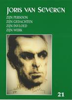
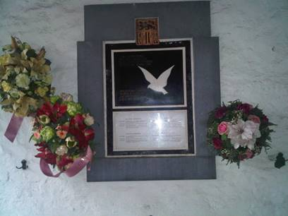
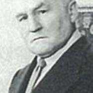

> nieuwsbrief > Nieuwsbrief Joris van Severen - 21e jaargang, 2e trimester 2017
Inhoud
De
Verdinaso-vlag aan het Slot van Male
Hernieuwen ledenbijdrage
voor 2017
De hernieuwing van de ledenbijdragen voor 2017 verliep
traditiegetrouw vlot. Toetreden kan nog steeds, mits overboeking
van de ledenbijdrage. Even herinneren: de minimumbijdrage bleef
ongewijzigd en bedraagt 29 €. In ruil daarvoor verzekeren we u
de stipte toezending van het nieuwe Jaarboek Joris van Severen
– het 21e al – in de meimaand en van de vier nummers van ons
kwartaalblad Nieuwsbrief
Joris van Severen. Vanaf het bedrag van 35 € boeken we u
met dank als steunend lid. Vereffening graag via onze rekening
IBAN: BE71 0001 7058 1469 – BIC: BPOTBEB1 t.n.v. Studiecentrum
Joris van Severen, Paddevijverstraat 2, 8900 Ieper.
Herdenkingen 2017
Verderop in deze Nieuwsbrief leest u alle praktische
gegevens met betrekking tot de geplande herdenkingsmomenten te
Brugge en te Abbeville op zaterdag 20 en zondag 21 mei
aanstaande. We roepen vanzelfsprekend op tot deelname hieraan.
Jaarboek 21 (2017)
Tegen uiterlijk 20 mei mogen onze leden uitzien naar het
nieuws jaarboek. Alvast een vooruitblik op de inhoud ervan
verderop in dit nummer.
Met deze aflevering
zijn we aan het 21e
Jaarboek Joris van Severen toe. Een blik op de ook dit
keer wel zeer gevarieerde inhoud: Net als vorig jaar openen we
met een gegrond commentaar op een bijdrage in het voorafgaande
jaarboek. In “Einen
andaurenden Kampf gegen die Deutschen…” komt Theo Bruning
in het verweer tegen enkele aspecten die de ‘toonzetting‘ van
Michiel Wallaards bijdrage In de ban van Joris van
Severen overschaduwen en de behandelde Nederlandse
Dinaso’s onvoldoende recht doen. Het is wel Wallaards verdienste
het in Nederland sinds de Tweede Wereldoorlog in de
geschiedenisstudie allesoverheersende “goed-fout-paradigma”
doorbroken te hebben, maar daarbij is de auteur helaas in andere
valkuilen terecht gekomen, meent Bruning jr.
Merkwaardige nevengedachte hierbij rond de evolutie in
deze binnen Vlaanderen en België: waar dat stigmatiserende
“goed-fout-paradigma” in Nederland aan het wegebben blijkt te
zijn, rukt het hier eerst echt op, zoals bleek uit reacties in
de jongste jaren van aanwezigheden van politieke tegenstanders
op oostfrontersfeestjes, verjaardagen van oudgedienden en…
colloquia van ons studiecentrum. “Er komt weer ruimte voor een stigmatisering van een
deel van de Vlaamse Beweging”, poneerde historicus Bruno
de Wever al in 1994 – overigens mede als gangmaker van die
evolutie.
Dat de persoonlijkheid van Joris van Severen ook heden
ten dag nog jongeren weet te boeien toont Guillaume Renier aan.
Hij selecteerde Van Severens oorlogsdagboek teneinde er in zijn
studie zijn oefening in historische kritiek mee te stofferen.
Zijn oefening kreeg Joris
van Severen – verdwaald in “Die vervloekte oorlog” tot
titel. Deze scriptie valt uiteen in een drietal items: vooreerst
een beknopte biografie, waarna een contextuele analyse van de
oorlogsdagboeken, om te eindigen met een ‘casestudy’ over Van
Severens katholicisme in wisselwerking tot zijn liefde- en
seksualiteitsbeleving.
“Wij beleven de
mislukking van het parlementarisme” - Joris van Severen:
1926-mei 1927. Aldus betitelde Romain Vanlandschoot de
afsluitende bijdrage van zijn verfijnde biografie over het
decennium 1917-1927 van Van Severens politieke werkzaamheid.
Mede omwille van de omvang leek het ons aangewezen dit
diepgravende essay over twee jaarboeken te spreiden. In deze
aflevering het eerste luik. Op het einde van dit tijdsbestek
blijkt overduidelijk dat Joris van Severen de Rubicon definitief
overgestoken had en vanaf dan voorgoed zijn eigen weg ging in de
richting van een staatsbestel waarin een op autoritaire leest
geschoeide orde heerst, gericht op de realisatie van een
Nederlands staatconcept en gebouwd op de leer van het
christelijke solidarisme.
“He
was a Cold Shower Fascist”: een Engelsman over Joris van
Severen. Zo had in 1966 een toen naamloos gebleven
auteur Van Severen getypeerd in de boekenbijlage van de
gerenommeerde The Times
Literary Supplement. Pieter Jan Verstraete diepte dat
ergernis verwekkende - en menigeen toen een “koude douche”
bezorgende - artikel weer op en schept er – ook omtrent de
auteur - klaarheid over. Als bijlagen daarbij de originele
Engelstalige tekst en een proeve tot vertaling naar het
Nederlands.
De naam van Leo Poppe is niet weg te denken uit de
historiografie van het Verdinaso. En… evenmin uit deze van de in
de collaboratie verzeilde oorlogsjeugdbeweging. In het najaar
van 1982 zou hij daarover komen vertellen binnen de Antwerpse
debatclub, doch daar bleef hij afwezig ten gevolge van zijn
verplichtingen op het te Brugge doorgaande congres van
“Vlamingen in de Wereld”. Persoonlijk hebben we op die avond met
hem in Brugge kennis gemaakt en samen hebben we dan mede in het
gezelschap van zijn oude vriend en DMO-lid Noël Dobbelaere, Van
Severens woonhuis het Cruyce van Bourgonje bezocht. Kristof
Papin bracht die voor de debatclub bedoelde lezing weer boven
water en kadert ze in de tijd van toen onder de titel Leo Poppes laatste maanden
van de collaboratie. Daaruit valt te leren wat we
eigenlijk als wisten, nl. dat Van Severens ideeën en streven
bleven doorwerken, ook bij diegenen die voor de collaboratie
opteerden.
Maurits Cailliau schets in Omtrent het Nationaal
Studie- en Documentatiecentrum Joris van Severen de
“stamboom” van wat organisatorisch voorafging aan ons huidige
Studiecentrum.
In 1965 hield Louis Gueuning zijn 25e herdenkingsrede
voor Joris van Severen. Een traditie die hij aangevangen had in
1941, in volle bezettingstijd. Ze kreeg De Stijl, dàt is de Man
tot titel en blijft als bezinningstekst haar volle waarde
behouden.
Het afsluitend gedicht in deze aflevering is andermaal
van Herwig Verleyen. Met zijn Bezoek aan het graf van
Gaby Warris brengt hij een eresaluut aan de destijds
jongste aanwezige in de kiosk te Abbeville, die tot haar laatste
adem gestreden heeft voor eerherstel.
Ook voor deze editie van ons jaarboek konden we andermaal
rekenen op de gewaardeerde medewerking van Frederic van
Waeijenberge als onmisbare tekstcorrector.

De gedenkplaat voor de vier
Brugse Abbeville-slachtoffers aan
het Cruyce van Bourgonje in de
Wollestraat te Brugge
Hij gaf zijn leven voor zijn lotgenoten
Gaston Durnez
Joris van Severen is gestorven als een moedig man die
zich opofferde voor zijn lotgenoten. Toen Franse militairen op
die fatale 20 mei 1940 twaalf gevangenen hadden gefusilleerd en
nieuwe slachtoffers uit hun hok wilden sleuren, is hij
onverschrokken naar hen toegegaan, in een poging om verder
bloedvergieten te voorkomen. Het kostte hem onmiddellijk de
dood.
Het meest complete en beste relaas over het drama dat
bekend staat als “het bloedbad van Abbeville” vindt men in Dossier Abbevílle, een
omvangrijke studie van wijlen de Brugse historicus Carlos
Vlaemynck (l929-1988), in 1977 uitgegeven door het Davidsfonds
in Leuven. Vlaemynck, die zich in de geschiedenis van de Tweede
Wereldoorlog had gespecialiseerd, heeft in zijn dossier zowel
onbekende documenten als getuigenissen kunnen verzamelen. Alleen
zijn mening over de verantwoordelijken voor de deportatie lokte
bij publicatie discussie uit.
Joris van Severen behoorde tot een konvooi van 78
“verdachten" die bijeengebracht waren in de gevangenis van
Brugge en van daar op 15 mei 1940 naar Frankrijk werden gevoerd.
Zowat drie vierde van hen waren buitenlanders, onder wie
communisten en zelfs joden die uit Duitsland waren gevlucht,
alsook Italiaanse antifascisten! Sommige mensen waren alleen
door een onvoorstelbaar toeval in de gevangenis terechtgekomen,
zoals een man wiens auto onderweg voor gevangenenvervoer was
opgeëist en die te amen met de aangehoudenen werd opgesloten.
Toch bestond, volgens Vlaemynck, ten minste tien procent van het
konvooi uit spionnen en Duitse Abwehr-agenten.
Toen de groep in Frankrijk aankwam, werd hij door de
Belgen zomaar, zonder meer, overgeleverd aan Franse militairen.
Zij brachten de gevangenen naar Abbeville en sloten ze daar op
in de kelder van een muziekkiosk. In de zwaar gebombardeerde
stad heerste, bij de nadering van de Duitsers, een grote chaos.
Paniek en wraakgevoelens moeten de mensen geleid hebben die tot
de terechtstelling van de gevangenen besloten. Zonder enige vorm
van proces. En zonder dat zij wisten, wie de opgeslotenen
eigenlijk waren.
Eerst haalde men de slachtoffers onder een voorwendsel
uit de kelder. Spoedig begrepen de anderen wat er gebeurde.
Nadat twaalf mensen waren gedood, in groepjes van vier, wilde
niemand nog uit eigen beweging het hok onder de kiosk verlaten.
In doodsangst verzette men zich en smeekte men om genade. Joris
van Severen kon dat niet langer aanzien en trad naar voren. “Doe
dat niet!" schreeuwden sommige lotgenoten hem toe. Maar hij
richtte zich tot een Franse luitenant. Toen die niet wilde
luisteren, stapte Van Severen met vaste tred de trap op,
“wellicht in de hoop buiten de kiosk de Fransen op het onzinnige
van hun daad te kunnen wijzen". Zijn medewerker en vriend Jan
Ryckoort wilde hem niet alleen laten gaan en liep hem achterna.
Amper was Van Severen buiten, of hij werd neergeschoten. Net als
Ryckoort. Nog zeven slachtoffers zouden volgen. In totaal werden
in Abbeville 21 gedeporteerden ter dood gebracht, onder wie acht
Belgen. Daarna voerde men de overblijvenden, via een lange
lijdensweg, dieper Frankrijk in, waar ze na de wapenstilstand
vrij kwamen.
Onder de bezetting lieten de Duitse overheden een
onderzoek instellen, met als resultaat dat de Franse
reserve-luitenant René Carron en zijn sergeant François Mollet
ter dood veroordeeld en in april 1942 terechtgesteld werden. Na
de oorlog heeft men in Abbeville een straat naar hen genoemd.
Carlos Vlaemynck komt in zijn boek tot de conclusie dat
vooral de toenmalige Belgische minister van Justitie en
uiteindelijk de gehele Belgische regering verantwoordelijk was
voor de wijze waarop de zgn. veiligheidsmaatregelen genomen
werden en de arrestaties en wegvoering van verdachten
plaatshadden. Andere auteurs, o.w. Luc Delafortrie, blijven de
allesoverheersende verantwoordelijkheid beklemtonen van Ganshof
van der Meersch, de auditeur-generaal die daarvoor onder de
oorlog moeilijkheden met de bezetter ondervond, maar verder niet
verontrust werd.
________________
Bron: De Standaard, 19-20 mei
1990.
Zaterdag
20 mei 2017: jaarmis te brugge &
ZONDAG 21 MEI 2017: GROET aAN HET GRAF TE
ABBEVILLE
Jaarmis
in de
Blindekenskapel te Brugge
Zaterdag 20 mei: 15.00 uur: Plechtige
Gregoriaans gezongen H. Mis met homilie, opgedragen door de E.H.
Roeland Vansteenkiste, in de Blindekenskapel te Brugge ter
nagedachtenis van Joris van Severen, zijn lotgenoten en al onze
overledenen.
16.00 uur: Receptie,
aangeboden door de Stichting Joris van Severen vzw.
De op de herdenkingsmis aansluitende receptie gaat door in
het Hotel Portinari,
gelegen op ’t Zand 15, Brugge.
Groet aan het graf te Abbeville
Zondag 21 mei: afspraak om 11.30 uur aan de
toegang tot het kerkhof te Abbeville. Aansluitend gezamenlijk
bezoek aan het graf van Joris van Severen en
Herdenking aan het Bourgoensche
Cruyce
Zaterdag 20 mei:
11.00 uur: aan de toegangspoort tot het Bourgoensche
Cruyce, het voormalige woonhuis van Joris van Severen in de
Wollestraat te Brugge memoreert een gedenkplaat de namen van de
vier Brugse slachtoffers van het Bloedbad van Abbeville.
Sinds enkele jaren wordt daar door het Brugse Abbeville Comité jaarlijks
een korte herdenkingsplechtigheid gehouden rond de datum van 20
mei. Dit jaar valt die plechtigheid op dezelfde datum als deze
van de herdenkingsmis in de Blindekenskapel, Kreupelenstraat
(zijstraat van de Smedenstraat) met volgend stramien:
welkomstwoord, In Memoriam voor de vier Bruggelingen,
bloemenhulde, toespraak namens het Brugse Abbeville Comité,
afscheidswoord, het Gebed voor het Vaderland, met afsluitend
receptie. Wellicht wordt ook dit jaar voorafgaand aan de
plechtigheid in de Wollestraat een wandeling ingericht langsheen
enkele plaatsen die in het leven van de Brugse
Abbeville-slachtoffers een rol heeft gespeeld. Momenteel zijn de
praktische gegevens daarvan nog niet gekend. Informeer in de
week voorafgaand aan 20 mei.
Steun en info
Wenst u op de hoogte gehouden te worden van de
activiteiten van de Stichting Joris van Severen vzw,
dan kunt u zich wenden tot de voorzitter
Voor het bezoek aan het graf te Abbeville op zondag 22
mei maken we gebruik van de ‘samen-rijden’-formule op koste
delende basis. Dit initiatief wordt gecoördineerd door
Omtrent Tony Herbert: roerende eensgezindheid

Tony Herbert
“(…) Gaandeweg liet Herbert zich meer in met praktische
partijpolitiek, die tot uiting kwam in de strijd tegen Joris van
Severen, die zich van het KVNV had afgescheurd en in 1931 het
Verdinaso oprichtte. Herbert stichtte in die context de Vlaamse
Nationale Centrale voor Sociale Actie en nam er de leiding van.
Deze vakbond op autoritair-corporatistische grondslag moest een
tegenwicht vormen voor het Vlaams Nationaal Vakverbond in
West-Vlaanderen dat dichtbij het Verdinaso stond. (…) Herbert
wierp zich op als de leider van het West-Vlaamse
Vlaams-nationalisme tegen het Verdinaso, maar zijn politieke
ideeën waren niet minder autoritair dan die van Van Severens
beweging. Herbert speelde als een van de vertegenwoordigers van
West-Vlaanderen een sleutelrol in de oprichting van het VNV en
was in niet geringe mate verantwoordelijk voor de autoritaire
invulling van het programma van de nieuwe partij. Herbert raakte
snel gebrouilleerd met de partij omdat hij er niet in slaagde
Staf de Clercq te overvleugelen. Een ander motief was de
evolutie van het Verdinaso, dat niet langer uit was op het einde
van de Belgische staat, maar op de verovering van de macht
binnen de staat om hem door Vlamingen te laten domineren. Zoals
aangestipt was het programma noch de autoritaire stijl (militie
om de politieke macht te veroveren) van het Verdinaso een
breekpunt geweest voor Herbert. Hoewel hij dichtbij het
Verdinaso stond, werd hij er nooit formeel lid van.(…)” (p. 8)
Dirk Luyten, Ondernemer
tussen
volk en staat; enkele historiografische ankerpunten.
“(…) De stichting van het Verbond van Dietse Nationaal
Solidaristen (Verdinaso) op fascistische en Dietse grondslag
door Van Severen in 1931 en het antwoord van Hendrik Elias met
zijn democratische en federalistische Vlaams Nationale
Volkspartij (VNVP) zijn de belangrijkste mijlpalen. Die laatste
partij bleek een mislukking omdat het federalisme en de
democratische methode niet meer aansloegen bij de
Vlaams-nationalisten. Het Verdinaso kende wel een zeker succes,
maar evolueerde na 1934 onder impuls van Van Severen weg van het
antibelgicisme. (…) Wel is duidelijk dat Herbert zich ontpopte
als de ferventste tegenstander van Van Severen op het moment dat
die brak met het KVNV. Dit had niet te maken met de ideologische
lijn van het Verdinaso, wel met de strijd om het leiderschap in
West-Vlaanderen. Ideologisch zat hij op dezelfde lijn van zijn
concurrent van wie hij zich verlost zag. Hij stichtte de Vlaams
Nationale Centrale voor Sociale Actie om te voorkomen dat
arbeiders zouden overstappen naar het door Van Severen
opgerichte Nationaal Arbeiders Syndicaat. De gelijkenissen
tussen deze twee autoritair-corporatistische organisaties waren
veel groter dan de verschillen (…).
Herbert wilde eigenlijk een Verdinaso, maar dan zonder
Van Severen. Hij profileerde zich als een van de
Vlaams-nationalistische leiders in de reactie tegen Van Severen.
Die reactie zou leiden tot de stichting van het Vlaams Nationaal
Verbond in oktober 1933 onder leiding van Staf de Clercq (VNV).
(…) Na de teleurstellende verkiezingen van 1932 werd hij door de
Vlaams-nationalistische partijen en fracties aangesteld als
bemiddelaar. (…) Dat de jaarlijkse landdag niet kon doorgaan in
1932, tekende de malaise in het Vlaams-nationalisme. Dat jaar
(1932) had wel de eerste Verdinaso-landdag plaats. (…)”
(pp.30-31)
“(…).Zijn (Herberts) vertrek uit het VNV betekende meteen
ook zijn afscheid van het anti-Belgisch Vlaams-nationalisme. In
1934 sloeg hij zoals Van Severen en het Verdinaso een nieuwe
koers in. De Belgische staat moest niet meer vernietigd maar
veroverd worden om een herstel van de Nederlanden mogelijk te
maken. (…) Hij publiceerde vanaf 1936 geregeld in het eind 1934
opgerichte zogeheten Leuvense professorenblad Nieuw Vlaanderen, een
weekblad dat pleitte voor een politieke samenwerking tussen
Vlaamsgezinde en rechtse krachten en voor een federalisering van
België. Herbert publiceerde vooral over de internationale
politiek en de Belgische buitenlandse politiek. Hij schaarde
zich enthousiast achter de opzegging van het Frans-Belgisch
Militair Akkoord in 1936 en de Belgische internationale
onafhankelijkheidspolitiek zoals die vooral door koning Leopold
lll werd belichaamd.
Herbert pleitte voor een militaire samenwerking met
Nederland en plaatste die samenwerking uitdrukkelijk in een
Groot-Nederlands kader. In een voordracht voor het Katholiek
Vlaams Oud-Hoogstudentenverbond (KVOHV) in Leuven op 4 juli 1937
pleitte hij voor de vorming van het ene Rijk der Nederlanden:
'België en Nederland, met hun wederzijdse overzeese bezittingen,
zouden een Rijk kunnen vormen waarvan de macht zelfs voor het
Britisch Empire een doorn in 't oog zou zijn.'
'De Dinaso-gedachte wint veld', blokletterde Hier Dinaso!, het
weekblad van het Verdinaso in reactie op de voordracht. Herbert
stond inderdaad zeer dicht bij de lijn die Van Severen had
uitgezet. Ook Herberts strijd tegen het antimilitarisme van het
Verbond van Vlaamse Oud-strijders (VOS) en zijn pleidooien en
acties voor nationale weerbaarheid sloten aan bij de Verdinaso
standpunten. De toenadering kwam van twee kanten. Herbert deed
een opgemerkt optreden op 13 januari 1938 voor het Comité voor
Politieke en Sociaal-Economische Voorlichting, een
mantelorganisatie van het Verdinaso, dat een lezingencyclus
organiseerde onder de titel De Vlaamse beweging, België
en de gebondenheid der Nederlanden en daarvoor
prestigieuze sprekers kon aantrekken, onder wie dus Herbert. Hij
werd ingeleid als woordvoerder van de naoorlogse generatie, de
generatie van het offer waarmee werd gerefereerd aan zijn
Leuvense tijd.
Herbert wees dit slachtofferaureool af: 'Wie de gevolgen
ondergaat van zijn zelfbewust volbrachte plicht is geen
slachtoffer. Wij hebben steeds gehandeld in het volle bewustzijn
dat het onze onverbiddelijke plicht was sterk te staan en
onwrikbaar, [...], in de plaats van de zwakke en de al te
buigzame partijpolitieke aanvoerders’. (…)” (pp. 34-35)
Bruno de Wever, Tony
Herbert en het Vlaams-nationalisme tijdens het interbellum.
“(…) De vaststelling is dat er zich in deze periode
(1934-36) een verandering in het denken van Tony Herbert begon
voor te doen. Die verandering kan vanuit verschillende factoren
worden verklaard. Misschien (waarschijnlijk?) begon Herbert, die
- niet te vergeten - bedrijfsleider en ondernemer was, vragen te
stellen bij de economische wenselijkheid en haalbaarheid van een
Belgisch zelfstandig Vlaanderen. Naast deze bedrijfseconomische
factor, valt ook een politiek-ideologische te noemen. De
verandering in Herberts denken hing nauw samen met een radicale
koerswijziging in de al even radicale anti-Belgische opvattingen
van Joris van Severen. In augustus 1934 kondigde Van Severen een
'nieuwe marsrichting' af. Het ging 'zijn' Verdinaso niet langer
om de vernietiging van de Belgische staat, maar om de verovering
van de macht binnen het bestaande staatsbestel. Deze wending
zette Herbert aan tot het herdenken van zijn opvattingen over de
verhouding Vlaanderen-België. Langzaam maar zeker evolueerde hij
tot het standpunt dat de Vlamingen zich binnen en dus met behoud
van het Belgische staatsbestel moesten ontplooien en hun
meerderheidspositie benutten. (…)” (p. 85)
“(…) In het Belgische politieke landschap van het
interbellum en de vroege naoorlogse periode was Tony Herbert een
erg merkwaardig personage. Hij maakte immers een enorme omslag
in zijn politieke denken en handelen op Vlaams-Belgisch vlak,
van het ene naar het andere uiteinde van het
politiek-communautaire spectrum. Hij begon zijn politieke
'loopbaan' in radicaal Vlaams-nationalistische kring en
profileerde zich als een flamingantisch volksnationalist. Vanaf
eind jaren 1920, begin jaren 1930 huldigde hij daarnaast, onder
invloed van Joris van Severen en het Verdinaso (waarvan hij
nooit lid werd), Groot-Nederlandse opvattingen. Het was onder
invloed van diezelfde Van Severen en zijn nieuwe marsrichting
dat Herbert een omslag begon te maken in zijn denken. Ca.
halfweg de jaren 1930 evolueerde hij tot de opvatting dat niet
de vernietiging van de Belgische staat diende nagestreefd, maar
de verovering van de macht binnen het staatsbestel. Hij
participeerde in de Vlaamse en rechtse concentratie die zich
midden jaren 1930 voltrok en ruilde zijn radicale,
anti-Belgische Vlaamsgezindheid in voor een strijdvaardig maar
gematigder flamingantisme. Daarin schoot hij verder door en
evolueerde hij in de tweede helft van de jaren 1930 en onder de
bezetting tot een royalist en belgicist. Tezelfdertijd bleven
andere politieke opvattingen zijn hele leven vrij stabiel tot
ongewijzigd. Zo getuigde Herbert onafgebroken van een erg
autoritaire gezindte. Al in de vroege jaren 1920 liet hij zich
misprijzend uit over politieke partijen en haar
vertegenwoordigers in het parlement. Door zijn koerswijziging in
Vlaams-Belgische verhoudingen bleef zijn autoritaire opvatting
gestand. Vanaf de tweede helft van de jaren 1930 pleitte hij
voor een sterk staatsgezag, onder leiding van de koning. In de
brochure getiteld Demain
toonde hij zich onomwonden voorstander van een quasi-absoluut
gezag voor de koning. Toen er zich na de oorlog een democratisch
réveil voordeed en zijn autoritaire ideeën niet werden opgenomen
in het CVP-partijprogramma, kon Herbert niet anders dan de
parlementaire democratie aanvaarden.” (p. 109)
Karel van Nieuwenhuyse, Van Vlaams-nationalist naar Belgicist
_________________
Bron: Tony
Herbert (1902-1959). Een veelzijdig leven. Referaten
van het colloquium te Kortrijk op 22 november
2013.Verhandelingen De Leiegouw, 2015.
Op het programma:
De vzw Kapelaan Verschaeve organiseert op zaterdag 8 juli 2017
een colloquium. onder de titel 'De hete zomer van 1917’.
Naar aanleiding van de honderdste verjaardag van de Open
Brief aan koning Albert I is het de bedoeling om de
positie en de invloed van Verschaeve te herdefiniëren op basis
van recente onderzoeken en publicaties.
10.30 uur Ontvangst met koffíe in het gemeentehuis
Alveringem 'Hof van Wyckhuize'
11.15 tot 12.15 uur: Bezoek aan de kapelanij Verschaeve
12.30 tot 14.00 uur: Lunchmogelijkheid
14.30 uur: Colloquium 'De hele zomer van 1917' (zie
programma hieronder) in het OC De Kwelle, St,-Rijkersstraat 20.
Alveringem
17.00 uur: Afsluitend: receptie
Programma
colloquium:
Inleiding door Romain
Vanlandschoot
Referaat 1: 'De politieke
situatie, de regering en Verschaeve' door Dr. Vincent Scheltiens,
Centrum voor Politieke Geschiedenis, Universiteit Antwerpen
Referaat 2: 'Het militaire
apparaat en de Vlaamse Beweging' door Dr. Luc Vandeweyer,
historicus gespecialiseerd in de Vlaamse Beweging en Eerste
Wereldoorlog
Referaat 3: 'De brief aan
kardinaal Mercier' door Romain Vanlandschoot, Historicus van de Vlaamse
Beweging
Referaat 4: 'De brief aan
paus Benedictus XV' door Prof. Dr. em. Frans-Jos Verdoodt
Algemene besluiten van het colloquium door Rik Van Cauwelaert.
journalist
Inschrijving via
antwoordstrook vóór 20 juni aan vzw Kapelaan Verschaeve,
p. a, O.L. Vrouwstraat 11, 8500 Diksmuide of via mail aan:
koen.bultinck@skynet.be.
Dhr. / Mevr. ………………………………………..neemt deel aan het
Colloquium met perso(o)(n)(en.
Straat + nr.:……………………………………………….. Plaats + postcode………………
□ Neemt deel aan het colloquium én de lunch aan 20
Euro/persoon
□ Neemt enkel deel aan het colloquium aan 5 Euro/persoon
□ Komt met de trein en wenst vervoer van Station Koksijde
tot Alveringem
Graag bevestigen via overschrijving vóór 20 juni naar BE82
4766 1017 6168 van vzw Kapelaan Verschaeve - 0.L.Vrouwstraat 11,
8600 Diksmuide
Handtekening deelnemer
In deze rubriek
verwijzen we zonder veel commentaar naar recente publicaties
waarin Joris van Severen en/of het Verdinaso vermeld worden.
We citeren de meest treffende passussen woordelijk zonder
daarin volledigheid na te streven. We verzoeken onze lezers,
met ons, uit te zien naar publicaties die voor deze rubriek
'stof' kunnen leveren en ons kopie van de betreffende passages
toe te sturen.
Over de oudoom van Sophie de
Schaepdryver
“ (…) Voor hij – Karel de Schaepdryver - de frontlinie
overstak, was hij al bijzonder actief in de top van de
Frontbeweging. Hij zou – samen met Joris van Severen – de Open
Brief aan den koning der Belgen, Albert I – geredigeerd
hebben. Die brief vonden op 11 juli 1917 ‘talrijke soldaten bij
hun ontwaken op hun bed of aan de ingang van het
“kantonnement”.’ De brief was – aldus Lode Wils – opgesteld door
‘de Vlaamse ontwikkelden’ (…)”
_________
Bron: Karl Drabbe, http://www.doorbraak.be/nl/nieuws/waar-ons-heer-toch-zijn-goei-eten-steekt
Niet 1945 maar de
spooktreinen staan model
“(…) Eén van de meest prominente gedeporteerden was Joris
van Severen, leider van de fascistische maar pro-Belgische
beweging Dinaso, die pas een reeks toespraken had gehouden om
het moreel van het Belgisch leger op te peppen, en daarvoor door
het Hof was geprezen. Hij kwam in Abbeville terecht waar een
groep dronken Franse soldaten besloten had wraak te nemen op die
‘verraders’. Toen Van Severen hen tot kalmte wilde aanmanen,
werd hij neergeschoten (samen met twintig anderen). (…)”
__________
Bron: http://de-bron.org/content/niet-1945-maar-de-spooktreinen-staan-model
(n.a.v. de discussies rond de ‘noodtoestand’ inzake
terreurmaatregels.
Albert Pelckmans
(1910-1994): méér dan boeken verkopen
“(…) Al van in zijn Turnhoutse jeugd en tijdens zijn
studiejaren in het Klein Seminarie van Hoogstraten is de jonge
Kempenaar bezeten van boeken. Dat hij bovendien een bewonderaar
is van Joris van Severen en doordoor levenslang
Groot-Nederlander, overtuigt hem misschien ook om als volontair
in een ‘Hollandse’ zaak te gaan werken. (…)”
________________
Bron: Roets-kalender 2016. N.v.d.r.: ‘De
Nederlandsche Boekhandel’ heet ondertussen Uitgeverij Pelckmans,
waarvan Alberts kleinzoon Thom Pelckmans de leiding heeft en
door wiens bemiddeling we Die
vervloekte oorlog, het oorlogsdagboek van Joris van
Severen hebben kunnen publiceren.
Luc Beyer omtrent Joris van
Severen
“(…) Beyer s’immergea aussi dans le
Verdinaso de Joris van Severen, au départ acquis à l’Ordre
nouveau et au flamingantisme mais qui aurait combattu
l’Allemagne nazie en mai 1940 s’il n’avait été exécuté à
Abbeville. (…)“
________________
Bron: uit de
recensie van Chrtistian Laporte van: Luc Beyer,
Ils avaient leurs raisons
14-18 & 40-45. La collaboration en Flandre, op:
http://www.lalibre.be/actu/belgique/regard-decale-sur-l-engagement-des-collabos-flamands-57d9833b35704459bc0e0453
Omtrent predikant F.G. Willekens
“Een andere predikant die de HGS [Hervormde Gereformeerde
Staatspartij, waarvan Lingbeek de voorman was] steunde en in het
hoofdbestuur zat, was de Friese predikant Franciscus Cornelis
Willekes (1876-1940). Het laatst van zijn leven stond hij te
Spijk (Groningen) waar hij ook met emeritaat (1939) ging. [...]
Willekens was geabonneerd op Hier Dinaso!, het blad
van het Verdinaso, de Belgische zusterpartij van de NSB.”
_______________
Bron: Henk Tyssen, Om het behoud van
protestants Nederland. Biografie van C.A. Lingbeek, dominee en
politicus”, Utrecht, Kok, 2016, pp 183-184. Nvdr: Op die
laatste kwalificatie valt uiteraard wel wat af te dingen!
PM: In het boek NSB-predikant. Ds. Mr.
L.C.W. Ekering (1889-1964) en zijn keuze voor het
nationaalsocialisme, Uitg. Aspekt, Soesterberg, 2016)
vinden we nog een predikant met een abonnement op Hier Dinaso!, namelijk
Ds. J.F. Roth (1891-1976), zwager van Ekering en predikant in
Zoetermeer.
Joris van Severen in de Roetskalender
van het Davidsfonds
Joris van Severen in Roetskalender Davisfonds Deze (54e)
week schenkt de befaamde Roetskalender van het Davidsfonds
aandacht aan de figuur van Joris van Severen. Aandacht voor een
controversieel figuur in de Belgische geschiedenis én de
geschiedenis van het Vlaams-nationalisme, is dezer dagen
opmerkelijk te noemen. Ik wens het Davidsfonds hiervoor te
bedanken. Opmerkelijker is nog dat het hier gaat over een
objectieve, interessante persoonsbeschrijving. Het is net die
objectiviteit die in onze krampachtig politiek-correcte
tijdsgeest een extreme zeldzaamheid is geworden. Joris van
Severen was immers dermate eigenwijs, wispelturig en
controversieel dat hij in geen enkel "bedje" paste Dat Joris van
Severen geen hokjesdenker was, fnuikte zijn geesteskind, het
VERDINASO, en daarmee ook zijn politieke loopbaan. Met zijn
Nieuwe Marsrichting zwoer hij immers het anti-Belgicisme en het
anti-royalisme af, waardoor hij zo goed als alle geledingen van
het Vlaams Nationalisme de gordijnen injoeg. Die Nieuwe
Marsrichting zorgde er echter wel voor dat hij aanvaardbaar werd
voor fanatieke Establishment-Belgicisten, zoals Pierre Nothomb.
Helaas voor hem was dit niet voldoende om van één van de vele
zwarte lijsten van de Staatsveiligheid geschrapt te worden. Het
was uiteraard daardoor dat ook hij op één van de zogenaamde
Spooktreinen naar "La Douce France" belandde. Daar ging het er
helaas niet zo douce aan toe, en Van Severen werd samen met 20
medereigers om het leven gebracht door Franse militairen (het
beruchte bloedbad van Abbeville). Van Severen werd gedood door
een nekschot. Het spreekwoord "Wie zijn kop boven het maaiveld
uitsteekt is hem kwijt" was daarmee nooit zo toepasselijk. Dat
België burgers de dood injoeg, haar eigen grote democratische
principes even "vergat", was en is de pijnlijke waarheid.
Excuses hiervoor bleven verbazend lang uit. Het is een magere
troost, maar de hypocrisie van het Belgische politieke
establishment is dus verre van nieuw. Het is een vals gezicht
dat we al decennialang met onze collectieve geschiedenis
meezeulen.
______________
Bron: Pieter De
Spiegeleer, Heldergem-Haaltert, in De Beiaard. Weekblad van
Zuid-Oost-Vlaanderen, 10 november 2016.
Dernier Carré
“(…) Mais l’histoire glorieuse de notre pays
ne peut plus s’enseigner. Des visionnaires tels Joris van
Severen et Léon Degrelle furent sans doute les derniers à
vouloir rendre à nos provinces le destin historique qui leur
appartient de droit. Les pensée-petit de la société de
consommation en péril ont su le leur faire payer! En livrant
d’abord aux fusils de la soldatesque d’Abbeville le chantre du
Dietsland rassemblant dans leur nation originelle tous les Thios
de langue germanique et romane. (…)”
________________
Bron: Dernier Carrré – Hertog Jan
van Brabant, nr. 92, p. 3, december 2016.
Onwetendheid of kwade wil?
“(…) Andere collaborerende boegbeelden uit het sterk
versplinterde rechtse nationalistische spectrum waren Joris van
Severen (1894-1940, advocaat, in 1940 door Franse agenten
neergeschoten in Abbeville van [het] Dinaso (Verbond van Dietse
Nationaal-Solidaristen, met de Dietse Militanten Orde
als paramilitaire tak) (…)”
___________________
Bron: Aldus valt te lezen
in de Cronijcke, het
mededelingenblad van de Oudheidkundige Kring van het Land van
Dendermonde, 33e jg., januari-februari 2017, pp. 5-6, in een
bijdrage van ene Aimé Stroobants, onder de titel ‘Lokale
straatnamen’. Het zal wel moeilijk zijn nog méér onzin over
Joris van Severen in één zin te verzinnen: Joris van Severen:
‘advocaat’, ‘collaborerend boegbeeld’, door ‘agenten’
neergeschoten’, ‘Dietse’ (i.p.v. Dinaso Militanten Orde…)